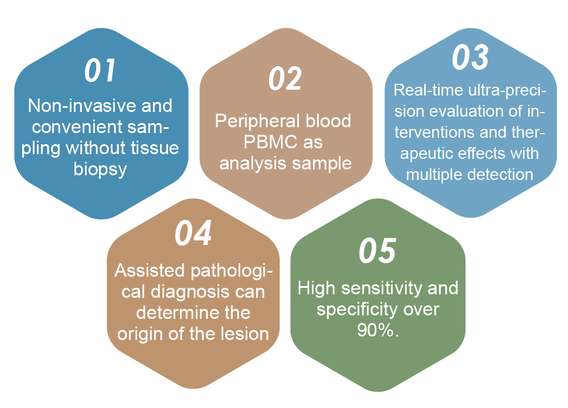

Precise Diagnosis of Ultra-early Tumors by DNA Methylation
Ultra-early high accuracy, sensitivity and specificity of more than 90%.
By detecting DNA methylation modification status in human peripheral blood cells, we can effectively assess and accurately predict the risk of ultra-early cancer.
Covering 16 kinds of malignant tumors with the highest morbidity and mortality in China
including liver cancer, lung cancer, prostate cancer, breast cancer, colorectal cancer, pancreatic cancer, brain cancer, stomach cancer, ovarian cancer, cervical cancer, nasopharyngeal cancer, esophageal cancer, bladder cancer, renal cancer, testicular cancer, etc.
Technical Advantages

Accurate detection of DNA methylation in biological age
Epidial Biological Age DNA Methylation Precision Detection Technology is a new generation of international patented technology developed by HKG epitherapeutics of Hong Kong based on its breakthrough research results.
It can accurately detect the biological age of individuals only by analyzing saliva samples. It has three advantages:convenient sampling, rapid analysis and accurate results.